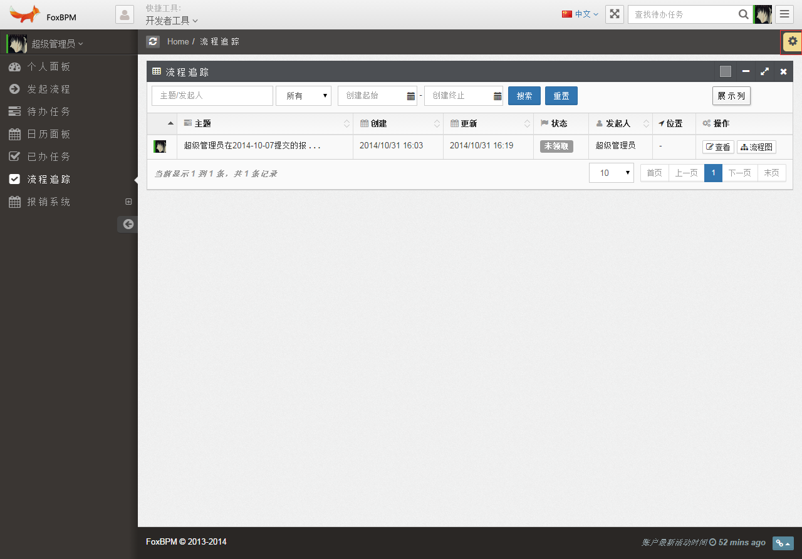

foxbpm-common web功能介绍
-
个人面
界面原型如下：

说明：该页面作为主页面，目前只有日历面板和待办任务有效(关于日历和代码后面介绍)。
-
发起流程
发起流程就是当前用户可以发起的流程（可以启动流程）。
界面原型如下：
功能说明：支持搜索查询、流程启动操作。
点击启动按钮会弹出启动表单页面。

在该表单页面上只有“流程状态”，“启动并提交“，“关闭”按钮。
注意：表单上需要填写"申请日期"、"报销金额"(必须输入数字)、“报销部门”、“发票类型”、“事由”（可选）。
-
待办任务
待办任务就是当前用户未处理的任务。
界面原型如下：
界面功能：待办任务查询、列表分页、展示列设置、操作表单(主要命令操作)、查看流程图。
注意
发起人必须是用户的ID（不支持用户名）。
-
日历面板
日历面板是采用日历的形式展现当前用户所有的待办任务。
界面原型如下：
界面功能：支持根据“任务优先级”、“任务创建或任务期限”来过滤待办任务，以支持“日历视图”的方式展现待办任务，和“待办任务”功能差不多区别就是在与展现方式上。
-
已办任务
已办任务是指当前用户已经处理过的任务。
界面原型如下：
界面功能：待办任务查询、列表分页、展示列设置、表单查看、查看流程图。
注意
发起人必须是用户的ID（不支持用户名）。
-
流程追踪
流程追踪就是当前用户参与过的且已完成的流程。
界面原型如下：

界面功能：流程查询、列表分页、展示列设置、表单查看、查看流程图。
注意
发起人必须是用户的ID（不支持用户名）。
-
系统设置
系统设置就是提供整个页面的配置。
界面原型如下：
点击如下图：
界面功能：支持“页面布局”、“本地缓存”(清除)、“主题切换”
-
流程详细信息
流程详细就是整个流程执行的情况。
界面原型如下：

界面功能：支持“轨迹动态运行”、“流程图状态操作、“轨迹信息查看”等操作，“流程信息列表”、“流程状态”、“当前处理者”、“流程参入者”等查看。
-
页面功能介绍
流程详细就是整个流程执行的情况。
界面原型如下：
界面功能：支持“全屏”、“锁定系统”、“退出系统”、“轨迹信息查看”等操作，“流程信息列表”、“流程状态”、“当前处理者”、“流程参入者”等查看。
界面通知中心

界面功能：目前只支持“任务通知”。
“任务通知”单击列表数据可以打开表单，以及单击更多可以跳转至待办任务。
工具栏：

点击开发者工具可以清空缓存、暂不支持国际化、以及查找待办任务，支持全屏，左侧菜单隐藏功能。